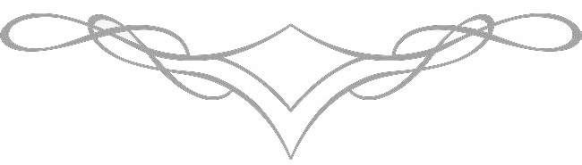

GALLERY
The Gallery of Quism is a visual journey through creation, transformation and awakening. Each section unfolds a contemplative dimension where art becomes reflection, resonance and silent dialogue.
Quism Museum: This special collection highlights an enlightened state of self-realization, where art connects the reflection of inner consciousness and the outer world through its various forms, symbols and colors; here quism's perspective indicates that "eternal life" is essentially a symbol of the subconscious mind, which becomes a reflection of the first life in the world related to sub-reality; each form carries an underlying formula here—which rises above visible reality and penetrates the depths of consciousness; thus art creates a unique path of experience and perception in the mind of each viewer, which transcends the boundaries of time...
